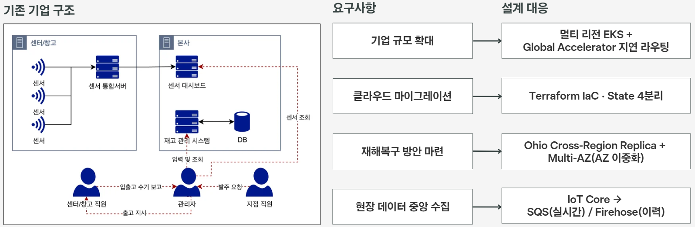
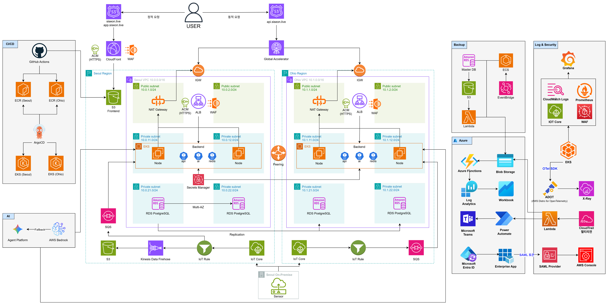
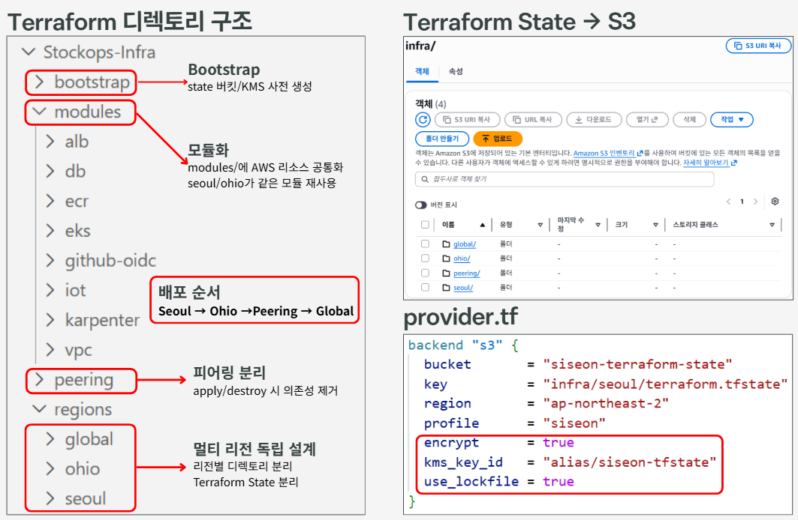
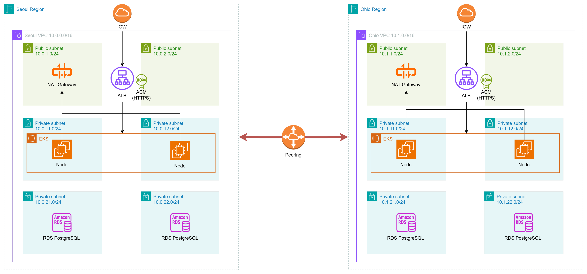
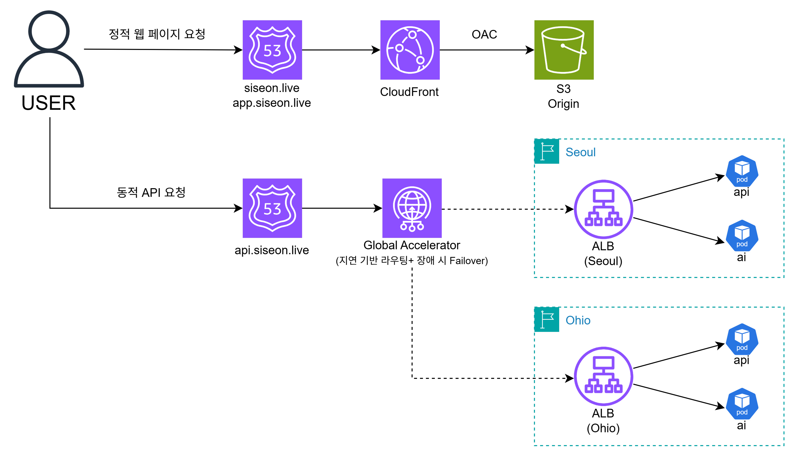
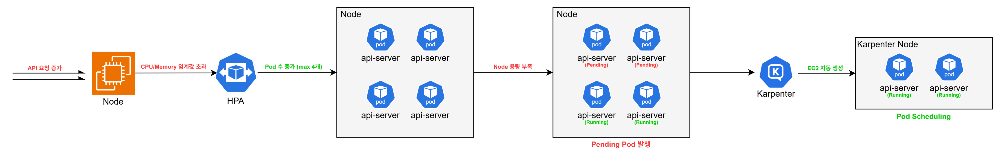
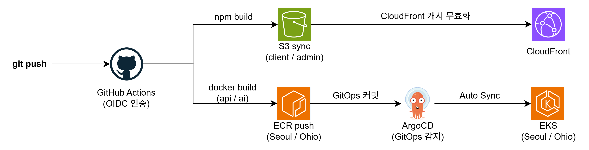

프로젝트 개요
온프레미스 ERP를 운영하던 K-Food 수출 기업의 미국 진출을 가정한 시나리오다. 물류센터 센서 데이터를 실시간 수집하고, 한국 본사와 미국 영업팀이 웹에서 주문·재고를 관리하는 ERP/WMS.
수기 보고로 이루어지던 구조를 클라우드로 옮기면서, 한 리전에 장애가 발생해도 서비스가 멈추지 않도록 서울(Primary)·오하이오(Failover) 두 리전에 고가용성 인프라를 설계했다.
요구사항 → 설계 대응
| 요구사항 | 설계 대응 |
|---|---|
| 기업 규모 확대 | 멀티 리전 EKS + Global Accelerator 지연 라우팅 |
| 클라우드 마이그레이션 | Terraform IaC · State 4분리 |
| 재해복구 방안 | Ohio Cross-Region Replica(리전 장애) + Multi-AZ(AZ 이중화) |
| 현장 데이터 중앙 수집 | IoT Core → SQS(실시간) / Firehose(이력) |

내가 담당한 것
- AWS 인프라 설계 및 구축 (VPC · EKS · RDS · ALB · Global Accelerator · CloudFront 등)
- Terraform 기반 IaC 자동화 — 재사용 모듈 8종, State 4분리
- CI/CD 파이프라인 — GitHub Actions(OIDC) + ArgoCD GitOps
- IoT 실시간 파이프라인 — IoT Core → SQS / Firehose 이중 경로
- 인프라 보안 — WAF 2계층 · IRSA · Secrets Manager + ESO · KMS State 암호화
담당 경계 — 재해복구
재해복구 설계 자체는 팀원이 담당했고, 이를 구현한 Terraform 코드(RDS Multi-AZ · Cross-Region Replica)는 내가 작성했다.
아키텍처
서울(Primary)·오하이오(Failover) 두 리전. 리전 간은 VPC Peering으로 잇고, 진입은 Global Accelerator가 지연 기준으로 라우팅한다.

동작 방식
Terraform State 4분리
| State | 범위 |
|---|---|
seoul | 서울 리전 전체 |
ohio | 오하이오 리전 전체 |
peering | 두 리전을 잇는 VPC Peering |
global | CloudFront · Route53 · Global Accelerator 등 리전 무관 리소스 |
apply Seoul → Ohio → Peering → Global
destroy 역순
네트워크 — 3-Tier
퍼블릭(ALB) · 애플리케이션(EKS 노드) · 데이터(RDS) 세 층으로 서브넷을 나누고,
보안 그룹은 alb → app → db 단방향으로만 열었다.

트래픽 — 정적/동적 분리
빌드된 정적 파일은 S3 + CloudFront가, 동적 API 요청은 Global Accelerator → ALB → EKS가 받는다. 두 경로를 나눈 결과는 07 성과에 있다.

HPA + Karpenter 2단 오토스케일링
파드 수는 HPA가, 그 파드를 올릴 노드는 Karpenter가 각각 늘린다.
| 대상 | min | max | 기준 |
|---|---|---|---|
api | 1 | 4 | CPU 60% |
ai | 1 | 4 | CPU 60% + Memory 70% |
인스턴스 t3.medium / t3.large · Spot 우선 · consolidateAfter = 1분

kubectl get hpa / nodeclaims 실측 출력. 원본 포트폴리오 12페이지.CI/CD 두 경로
Frontend
GitHub Actions가 client/admin을 빌드해 S3 sync → CloudFront 캐시 무효화. 컨테이너 이미지가 필요 없고 EKS와 무관하다.
Backend
서비스별 1회 빌드 후 동일 SHA 태그로 두 리전 ECR에 push → GitOps 레포의 이미지 태그 갱신 → 각 클러스터의 ArgoCD가 Auto Sync.

보안
키리스 인증
GitHub Actions는 OIDC로 IAM Role을 맡고, 파드는 IRSA로 임시 자격증명을 받는다. 장기 액세스 키를 저장소·클러스터 어디에도 두지 않았다.
WAF 2계층
CloudFront와 ALB 각각에 룰을 걸어, 정적 경로와 동적 API 경로를 서로 다른 지점에서 거른다.
보안 그룹 단방향 체인
alb → app → db 방향으로만 인바운드를 허용해, 계층을 건너뛴 접근 경로를 만들지 않았다.
시크릿 · State 암호화
애플리케이션 시크릿은 Secrets Manager + External Secrets Operator로 클러스터에 주입하고, Terraform State는 S3에 두되 KMS로 암호화했다.

설계에서 고민한 것
State를 왜 네 개로 나눴나
리전별로만 나누면 두 리전을 잇는 VPC Peering이 어느 한쪽에 종속된다.
그 리전을 다시 적용하면 피어링 경로가 같이 재생성되면서 반대쪽 라우팅이 깨진다.
peering을 독립 실행 단위로 뽑아내자 서울과 오하이오를 서로 독립적으로
건드릴 수 있게 됐고, 리전 무관 리소스를 global로 분리해
리전 작업이 전역 설정을 건드리지 않게 했다.
다만 상태를 나누는 것만으로는 의존성이 관리되지 않는다는 걸 이후에 알았다.
적용 순서를 규칙으로 문서화하고, 하드코딩한 참조를
remote_state 출력값으로 교체한 뒤에야 재현성이 확보됐다.
Terraform과 ArgoCD가 서로 덮어쓰지 않게 하려면
둘 다 쿠버네티스 리소스를 만들 수 있어 경계를 안 정하면 서로의 상태를 되돌린다. 수명주기가 인프라에 묶이는가를 기준으로 나눴다.
| 소유자 | 관리 대상 |
|---|---|
| Terraform | Service · IRSA · HPA · Namespace · TargetGroupBinding |
| ArgoCD | Deployment (이미지 태그) |
replicas는 HPA가 소유하는 값인데 매니페스트에도 있으면
ArgoCD가 계속 원래 값으로 되돌린다. 매니페스트에서 빼고 Application에
ignoreDifferences: /spec/replicas를 걸어 싸울 여지를 없앴다.
자원이 부족할 때 노드를 늘리지 않은 이유
파드가 몰려 노드 증설 의견이 먼저 나왔지만, 무엇이 자원을 쓰고 있는지부터 봤다. 빌드된 정적 파일을 내려주는 프론트엔드 파드가 트래픽과 무관하게 자리를 차지하고 있었고, 그건 애초에 클러스터에 있을 이유가 없었다. S3 + CloudFront로 옮기자 운영 파드가 5개에서 3개로 줄었고, 프론트 수정이 서버 재배포와 분리되는 부수 효과도 생겼다.
팀이 처음엔 반대해서, 줄어드는 파드 수와 비용을 정리해 다시 설명한 뒤에 진행했다.
트러블슈팅
① 한쪽 리전을 다시 적용하면 다른 쪽 피어링 경로가 삭제됨
- 증상
- 서울 또는 오하이오를
apply하면 반대쪽 리전의 VPC Peering 라우팅이 사라짐 - 원인
- 리전 VPC 모듈이 라우팅 테이블을 통째로 덮어씀
- 해결
- 적용 순서 규칙 문서화 + 하드코딩 참조를
remote_state출력값으로 교체 - 결과
- 전체 삭제 후 재적용해도 동일 구성 재현
② 부하가 몰리자 파드가 Pending 상태로 멈춤
- 증상
- HPA는 파드를 늘리는데 스케줄될 노드가 없어 Pending에서 진행되지 않음
- 원인
- Karpenter의
SecurityGroupSelectorTerms가 참조하는 태그가 클러스터 보안 그룹에 누락 - 해결
aws_ec2_tag리소스로 태그 보강- 결과
- 30초 내 스팟 노드 자동 프로비저닝 (t3.large ×2)
③ IoT 기기는 발행하는데 DB 테이블이 비어 있음
- 증상
- 센서가 정상 발행하는데 최종 적재 테이블에 행이 쌓이지 않음
- 원인
- IRSA 권한 · 환경변수 · JSON 매핑(
@JsonProperty) 누락이 겹침 - 해결
- 권한 → 설정 → 코드 → 데이터 순으로 계층별 순차 교정
- 결과
- IoT Core → SQS → RDS 실시간 경로 복원
RESULT
성과
- 운영 파드
- 정적·동적 분리로 상시 점유 자원 제거 (40% 감축)
- STATE 재현
- 삭제 후 재적용해도 동일 구성 복원
- 정적 액세스 키
- GitHub OIDC · IRSA · Secrets Manager + ESO
- 배포 무인화
- Merge 이후 배포까지. 리전별 독립 롤백 가능
5 → 3
4개 전부
0개
수동 단계 0
산출물
이 화면 크기에서는 미리보기 대신 다운로드로 확인해 주세요.
왜 멀티 리전인가
가용영역 이중화로는 못 막는 것
Multi-AZ는 한 리전 안의 데이터센터 한 곳이 죽는 상황을 막는다. 하지만 리전 단위 서비스 장애는 그 리전의 모든 AZ에 동시에 영향을 준다. 이 경우 다른 리전에 살아 있는 사본이 없으면 서비스가 멈춘다.
지연 기반 라우팅의 의미
한국 본사와 미국 영업팀이 같은 서비스를 쓴다. Global Accelerator가 요청자에게 더 가까운 리전으로 보내면, 태평양을 왕복하지 않아 응답이 빨라진다. 장애 대비와 성능이 같은 구조에서 나온다.
데이터는 어떻게 따라가나
애플리케이션은 두 리전에 똑같이 떠 있어도, 데이터가 한쪽에만 있으면 페일오버가 안 된다. RDS Cross-Region Replica로 오하이오에 복제본을 두어 서울이 끊겨도 읽을 데이터가 남아 있게 했다.
공짜가 아니다
리전을 하나 더 두면 인프라 비용과 관리 대상이 그만큼 늘어난다. 그래서 오하이오는 대칭 복제가 아니라 Failover 역할로만 두고, 상시 트래픽은 서울이 받도록 설계했다.
기술 스택
4인 팀 프로젝트의 전체 스택이다. 내 담당 영역을 함께 표기했다.
| 영역 | 기술 | 담당 |
|---|---|---|
| 네트워크 | VPC · 3-Tier Subnet · ALB · Global Accelerator · CloudFront · Route53 | ● |
| 컨테이너 | EKS · Kubernetes · Karpenter · HPA · Helm | ● |
| IaC | Terraform — 재사용 모듈 8종 · State 4분리 · S3 backend + KMS | ● |
| CI/CD | GitHub Actions(OIDC) · ArgoCD · Kustomize | ● |
| 데이터 | RDS(Multi-AZ · Cross-Region Replica) · S3 | ● |
| IoT 파이프라인 | IoT Core · SQS(실시간) · Firehose(이력) | ● |
| 보안 | WAF 2계층 · IRSA · Secrets Manager + ESO · KMS | ● |
| 재해복구 설계 | 리전 장애 시나리오 · 페일오버 정책 (구현 Terraform 코드는 내가 작성) | ○ |
| 애플리케이션 | api · ai 서비스 · client / admin 웹 |
○ |
용어집
이 페이지를 읽는 데 필요한 약어를 한 문장으로 정리했다. 클릭하면 펼쳐진다.
IaC Infrastructure as Code
State Terraform 상태 파일
remote_state 다른 State의 출력값 참조
GitOps Git 기반 배포
kubectl이 필요 없다.HPA Horizontal Pod Autoscaler
Karpenter 노드 오토스케일러
consolidateAfter로 유휴 노드를 되돌린다.